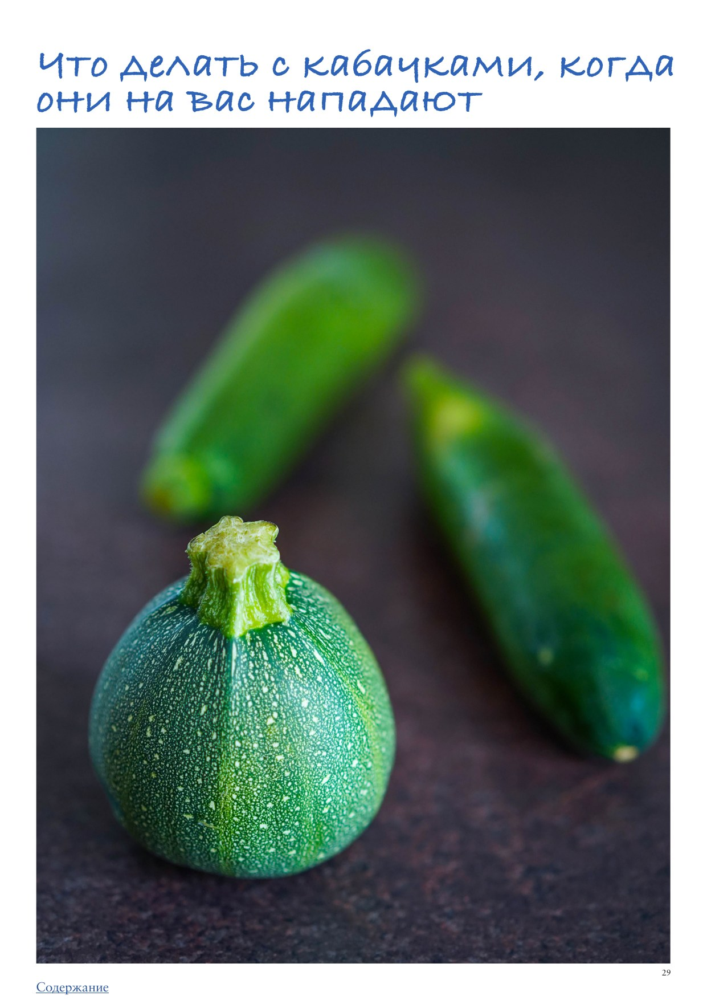

В августе буквально на каждой даче начинается «кабачковое безумие». Вроде и посадили-то всего пару-тройку семян, откуда такое огромное количество плодов, так и норовящих вымахать до размеров дирижабля, если их вовремя не сорвать?
Кабачки и цукини — не только полезный, но и поистине универсальный овощ, способный засиять во множестве ролей и ипостасей.
Идеи блюд с кабачками:
Кабачковые «спагетти»: молодые кабачки или цукини натереть на терке для корейской моркови, спиралайзере или нарезать очень тонкими ломтиками вдоль, затем тонкими брусочками поперек, слегка посолить и оставить на 30 минут, затем обсушить, поперчить и подавать как гарнир. Вариант: приготовить любой горячий соус для пасты (например, болоньезе), но вместо обычной пасты добавить в сковородку с соусом «лапшу» из кабачка и прогреть пару минут.
Кабачки, фаршированные мясом и рисом: разрезать небольшие кабачки пополам вдоль, выскрести сердцевину, чтобы получились «лодочки», посолить, оставить на 30 минут, затем отжать влагу и обсушить бумажными полотенцами. Слегка смазать снаружи оливковым маслом, выложить на противень или в форму для запекания. Наполнить фаршем (говяжьим или домашним, из говядины и свинины), смешанным с отварным рисом и специями. По желанию для сочности выложить поверх фарша тонкие кружочки помидора. Запекать при 180 °С до подрумянивания фарша, около 25 минут. По желанию посыпать сверху тертым твердым сыром и запекать еще 5–7 минут под верхним грилем, чтобы сыр расплавился.
Кабачки в хрустящей панировке с пармезаном: разрезать цукини или кабачок на крупные брусочки, посолить, оставить на 30 минут, затем обсушить. Обвалять в смеси сухарей панко и тертого пармезана, выложить на выстеленный пергаментом противень и запечь при 180 °С до золотистой корочки. Подавать с айоли (домашним майонезом, смешанным с измельченным чесноком и щепоткой сладкой паприки).
Фриттата с кабачком: нарезать молодой кабачок и красный сладкий перец кубиками примерно по 5 мм, порубить небольшой пучок любой зелени, натереть 40–50 г твердого сыра (лучше пармезана). Обжарить овощи на оливковом масле в термостойкой сковородке до светло-золотистого цвета. Взболтать 4 яйца с солью и перцем, перемешать с тертым сыром и зеленью, залить овощи. Готовить, пока фриттата слегка не схватится снизу, затем переставить в духовку, нагретую до 180 °С, на 5–7 минут, чтобы она пропеклась, но осталась нежной.
Добавка в любой суп: добавить в самом конце, когда суп уже готов, тонкую «лапшу» из сырого цукини или кабачка (натереть на терке для корейской моркови, спиралайзере или нарезать очень тонкими ломтиками вдоль, затем тонкими брусочками поперек). В горячем супе кабачок слегка смягчится, но останется хрустящим и придаст супу приятную текстуру.
Кабачки или цукини на зиму в томатном соке: нарезать кабачки или цукини брусочками размером с картошку фри. Выложить на дно стерилизованных банок по листочку базилика и нарезанному ломтиками зубчику чеснока, плотно уложить кабачки. Влить томатный сок в кастрюлю, довести почти до кипения, залить кабачки в банках по горлышко и дать постоять минут 10, чтобы кабачки прогрелись. Затем слить сок (так вы отмерите точное его количество, которое требуется), приправить солью, сахаром и яблочным уксусом так, чтобы вкус был насыщенным и приятным сладко-соленым (по желанию можно также добавить перец чили для остроты), довести до кипения. Залить кабачки кипящим соком, закрыть стерилизованными крышками, перевернуть, укутать и остудить.
Другие рецепты с кабачками в конспектах ПРА: